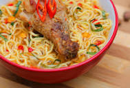

Indomie Noodles

Spicy goodness!
This is a dish loved by Nigerians for its easy preparation.
University boys in various institutions across the country will
tell you tales of how the notorious noodles has saved their lives!.
(although it doesn't stand a chance against the undefeated champion, Garri)
This article will give you an insight on how it is prepared!
Ingredients
- 2 packs of Indomie Super Pack(200g)
- 5 pieces of pulsating red hot bell peppers
- A medium sized onion
- 10kg of chicken
- Lots and lots of tissues!(Preparing this will get your nose running)
Preparation
- Pour two glasses of water into a clean pot and live to simmer on medium flame
- Add mixed vegetables, chopped pepper and onions and allow to boil for one minute
- Break the noodles and pour into the already boiling water
- Just before it is done, add some Sausages
- Once it is cooked and tender to your liking, serve hot together with your chicken